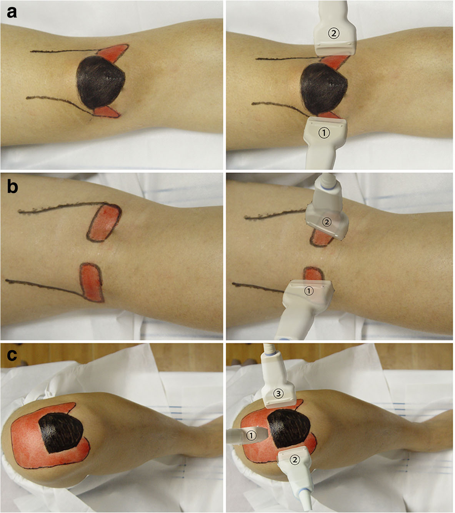
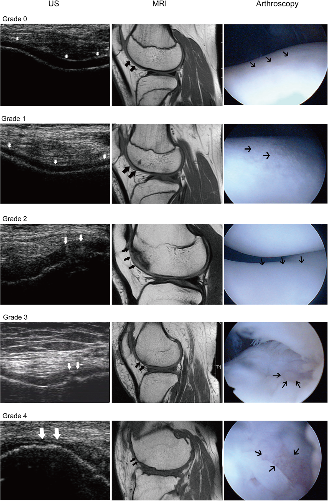

Respuesta clínica corta
¿Puede una ecografía normal descartar un defecto del cartílago femoral?
No con seguridad: frente a artroscopia, aproximadamente tres de cada diez defectos quedaron sin detectar según el evaluador.
Dato claveSensibilidad 62–69% · especificidad 91–93% · κ entre evaluadores 0,76
El barrido multiposicional mostró especificidad cercana al 91–93%, pero sensibilidad del 62–69% frente a artroscopia: un hallazgo positivo puede orientar en pacientes seleccionados, mientras que una ecografía negativa no excluye de forma fiable un defecto del cartílago femoral.
Observado
Qué encontró y cómo interpretarlo
Frente a artroscopia, la sensibilidad fue del 62,2% para un evaluador y del 69,4% para el otro; la especificidad fue del 92,9% y 90,5%. La ecografía rindió mejor para confirmar que para excluir.
La exactitud global fue del 75,4–78,5%, con valor predictivo positivo ajustado del 88,7–90,4% y negativo del 69,5–73,3%. Estos valores predictivos dependen de la prevalencia elevada en una muestra quirúrgica.
El acuerdo entre evaluadores ecográficos fue sustancial, con κ ponderado de 0,76; el acuerdo entre ecografía y resonancia fue κ de 0,61.
Los autores afirman un rendimiento similar a la resonancia rutinaria, pero el tamaño muestral es pequeño y la ausencia de intervalos de confianza para las métricas dificulta saber cuánta diferencia podría existir.
Atlas del artículo
Imágenes para entender el procedimiento
Estas figuras proceden del artículo original y se reproducen con licencia abierta verificada. Se muestran por su utilidad anatómica o técnica, no como prueba aislada de diagnóstico o eficacia.

El protocolo combina extensión, decúbito prono y flexión máxima para ampliar la superficie femoral accesible al haz ecográfico.
Cómo leerlaLas áreas coloreadas representan ventanas propuestas; no garantizan visualizar toda la superficie ni compensan limitaciones por dolor, rigidez o anatomía.
Cao J et al., figura 2 del artículo original · Fuente · Licencia CC BY.

Casos seleccionados relacionan el aspecto ecográfico de los grados con resonancia y artroscopia; sirven para reconocer patrones, no para estimar rendimiento.
Cómo leerlaSon ejemplos elegidos por los autores y no muestran los falsos negativos y falsos positivos que condicionan la utilidad real del método.
Cao J et al., figura 3 del artículo original · Fuente · Licencia CC BY.
Procedimiento del artículo
Barrido multiposicional del cartílago femoral
La estrategia combina extensión, decúbito prono y flexión máxima para exponer regiones del cartílago que no quedan accesibles desde una única ventana. Dos radiólogos interpretaron las ecografías de forma independiente y compararon la gradación con artroscopia.
- Transductor
- Lineal de alta resolución
- Planos
- Cortes longitudinales y transversales en cada ventana
- Referencia
- Artroscopia; resonancia como comparación adicional
- Gradación
- Escala ecográfica de 0 a 3 basada en la clasificación ICRS
- 01
Cóndilos anteriores en extensión
Con la persona en decúbito supino y la rodilla completamente extendida se exploran ambos lados de la rótula en planos transversal y longitudinal.
- Referencias
- Rótula, porción anterior del cóndilo femoral medial y porción anterior del cóndilo lateral.
- Lectura
- Esta ventana busca el cartílago que contacta con la articulación femoropatelar cerca de la extensión.
- 02
Cóndilos posteriores en prono
En decúbito prono se explora la fosa poplítea en ambos planos para acceder a las superficies posteriores de los cóndilos.
- Referencias
- Fosa poplítea y cortical posterior de los cóndilos femorales medial y lateral.
- Lectura
- La ventana posterior añade zonas que no son visibles desde la cara anterior con la rodilla extendida.
- 03
Tróclea con flexión máxima
De nuevo en decúbito supino y con la máxima flexión tolerada se explora el receso suprapatelar en planos transversal y longitudinal.
- Referencias
- Tróclea femoral, receso suprapatelar y superficie condral expuesta por la flexión.
- Lectura
- La flexión desplaza la rótula y abre una ventana para valorar el cartílago troclear.
- 04
Zonas de carga junto a la rótula
Manteniendo la flexión máxima se vuelve a explorar a ambos lados de la rótula, conservando el haz perpendicular a la superficie femoral.
- Referencias
- Bordes patelares y porciones de carga de ambos cóndilos.
- Lectura
- La perpendicularidad reduce anisotropía y artefactos, aunque algunas regiones cercanas a la escotadura siguen siendo inaccesibles.
Protocolo reconstruido a partir de los métodos y la figura 2 del artículo. La secuencia explica cómo se obtuvo el rendimiento publicado, pero no sustituye formación ecográfica ni el proceso diagnóstico completo.
Aplicabilidad
Qué significa clínicamente
La principal aportación práctica es no depender de una sola ventana anterior: posición y flexión determinan qué cartílago puede verse.
Un hallazgo ecográfico compatible puede elevar la sospecha en un contexto clínico adecuado, especialmente cuando la región es accesible.
Una ecografía negativa no debería cerrar el proceso si persiste una sospecha relevante, porque entre el 30,6% y el 37,8% de los defectos quedaron sin detectar.
La resonancia, la derivación y otras decisiones deben depender del cuadro clínico y de la pregunta diagnóstica, no solo de la disponibilidad de ecografía.
Límite
Qué no permite afirmar
Solo participaron pacientes con artroscopia programada, lo que introduce sesgo de espectro y limita la generalización.
La ecografía no accedió bien a todas las regiones, especialmente zonas próximas a la escotadura intercondílea.
El tamaño fue de 65 rodillas y no se presentan intervalos de confianza de sensibilidad y especificidad.
El artículo no evaluó impacto sobre decisiones, costes completos, resultados del paciente ni reproducibilidad fuera del centro.
Contexto
¿Se parece a tu paciente?
- Población estudiada
- 64 pacientes consecutivos, 65 rodillas, con dolor o discapacidad y artroscopia programada; la muestra representa una población quirúrgica seleccionada, no atención primaria ni cribado general.
- Diseño
- Estudio prospectivo de precisión diagnóstica con artroscopia como referencia
- Resultado evaluado
- Sensibilidad y especificidad de la ecografía para defectos del cartílago femoral frente a artroscopia
Fuente primaria
Lee el estudio, no solo nuestro análisis
Cao J, Zheng B, Meng X, et al. A novel ultrasound scanning approach for evaluating femoral cartilage defects of the knee: comparison with routine magnetic resonance imaging. J Orthop Surg Res. 2018;13(1):178. doi: 10.1186/s13018-018-0887-x
Responsabilidad editorial
Francisco José Extremera García
Fisioterapeuta colegiado ICPFA 4288 · Osteópata D.O.
Creador y responsable editorial de FisioLógico
- Última revisión
- Conflictos de interés
- Ninguno declarado.